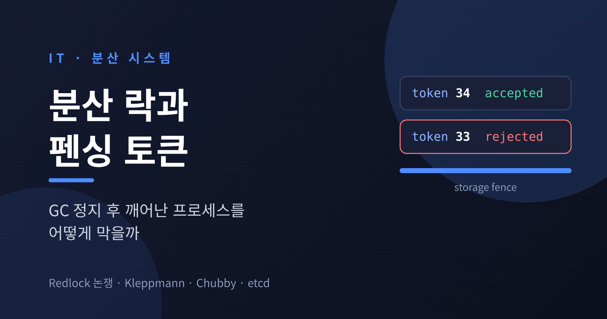
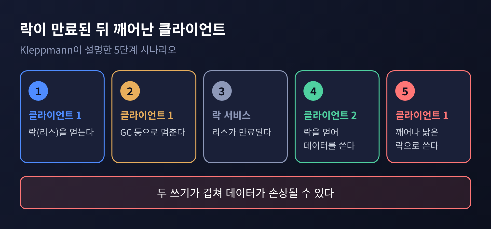
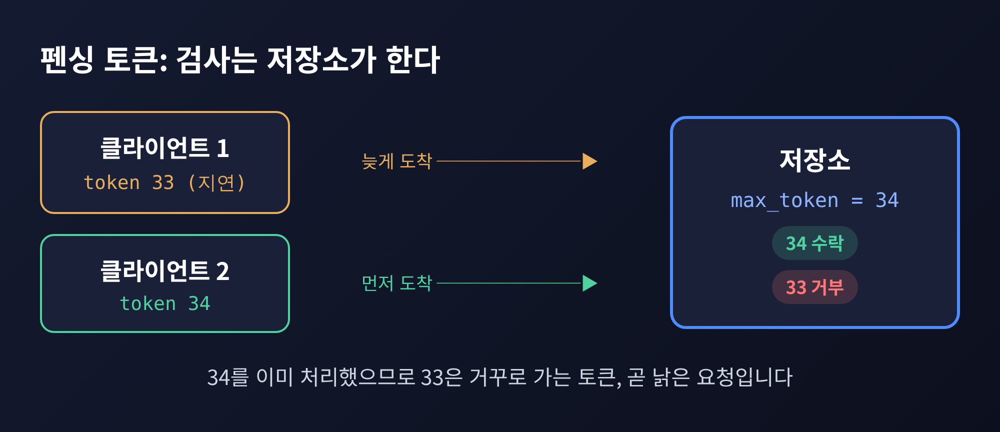
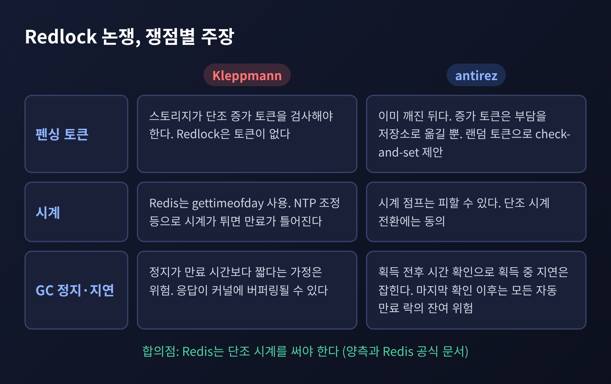
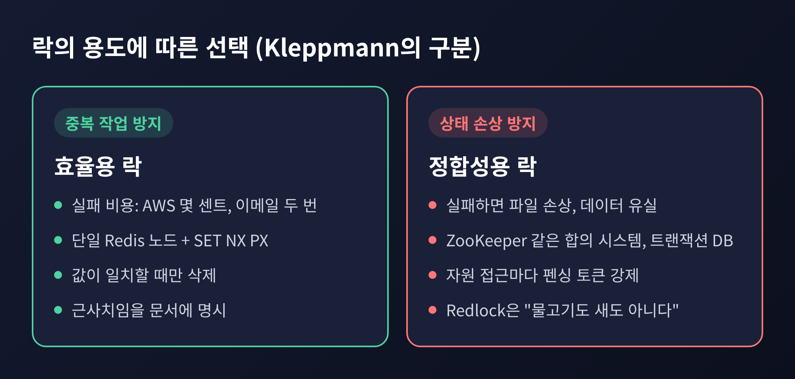
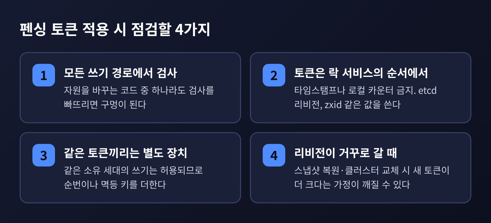

이번 글에서는 분산 락이 왜 생각보다 쉽게 깨지는지, 그리고 펜싱 토큰이 그 구멍을 어떻게 막는지 정리해 보겠습니다.
Redlock을 둘러싼 Kleppmann과 antirez의 논쟁도 함께 다룹니다.
먼저 결론부터 말씀드립니다.
만료 시간이 있는 락(리스)은 "내가 지금 락을 쥐고 있다"는 사실을 보장하지 못합니다.
그래서 락을 믿는 쪽이 아니라, 데이터를 받는 쪽이 낡은 요청을 걸러내야 합니다. 이 장치가 펜싱 토큰입니다.
분산 락은 대개 임대(리스) 방식으로 만듭니다.
락에 만료 시간(TTL)을 붙여 두면, 락을 쥔 프로세스가 죽어도 시스템이 영원히 멈추지 않습니다.
문제는 그 반대편에 있습니다.
프로세스가 죽은 것이 아니라 잠깐 멈췄다가 깨어나는 경우입니다.
Kleppmann이 2016년 2월 글에서 든 시나리오는 이렇습니다.
클라이언트 1이 락을 얻습니다.
스톱 더 월드 GC 등으로 클라이언트 1이 멈춥니다.
그 사이 리스가 만료됩니다.
클라이언트 2가 락을 얻어 데이터를 씁니다.
클라이언트 1이 깨어나, 여전히 자신이 락을 쥐고 있다고 믿고 쓰기를 수행합니다.
두 번의 쓰기가 겹치면 파일이 깨지거나 데이터가 유실될 수 있습니다.
Kleppmann은 HBase가 실제로 이 문제를 겪었다고 소개하며, GC 정지가 때로는 수 분에 이른 적도 있다고 적었습니다.

쓰기 직전에 "락이 아직 유효한가"를 한 번 더 확인하면 되지 않느냐고 물으실 수 있습니다.
통하지 않습니다. 확인을 마친 직후, 쓰기 직전에 멈출 수도 있기 때문입니다.
정지의 원인은 GC만이 아닙니다. 페이지 폴트, EBS 같은 네트워크 디스크 읽기, CPU 경합, 실수로 보낸 SIGSTOP도 같은 결과를 낳습니다.
네트워크도 마찬가지입니다.
Kleppmann은 GitHub 장애 사례에서 패킷이 약 90초 지연된 일을 인용합니다. 지연된 쓰기가 리스가 만료된 뒤에 도착할 수 있다는 뜻입니다. (이 사례는 Kleppmann의 글을 통해 확인한 내용이며, 원 보고서는 직접 확인하지 못했습니다.)
해법은 의외로 단순합니다.
락을 새로 얻을 때마다 엄격히 증가하는 번호를 하나 발급하고, 그 번호를 쓰기 요청에 함께 실어 보내는 것입니다.
Kleppmann의 예를 따라가 보겠습니다.
클라이언트 1이 토큰 33을 받고 멈춥니다.
리스가 만료되고, 클라이언트 2가 토큰 34를 받아 데이터를 씁니다.
깨어난 클라이언트 1이 토큰 33으로 쓰기를 시도합니다.
저장소는 이미 34를 처리했으므로, 33을 거부합니다.
핵심은 누가 검사하느냐입니다.
클라이언트는 자신이 낡은 락을 쥐고 있다는 사실을 모를 수 있습니다. 락 서비스도 발급 시점 이후의 일은 통제하지 못합니다.
그러니 검사는 자원, 곧 저장소가 쓰기와 원자적으로 해야 합니다.

관계형 데이터베이스라면 조건부 갱신 한 줄로 구현할 수 있습니다.
OneUptime의 etcd 펜싱 글이 소개하는 형태는 다음과 같습니다.
UPDATE resource
SET value = $2, fence_token = $3
WHERE name = $1 AND fence_token <= $3;
영향받은 행이 0이면 낡은 토큰이므로 쓰기를 거절합니다.
같은 글은 토큰을 타임스탬프나 로컬 카운터로 만들지 말라고 당부합니다. 락 서비스가 정한 순서에서 나온 숫자여야 의미가 있기 때문입니다.
펜싱 토큰이 새로운 발명은 아닙니다.
구글의 Chubby 논문(Burrows, OSDI 2006)에는 같은 발상이 시퀀서(sequencer)라는 이름으로 들어 있습니다.
락 홀더가 시퀀서를 요청하면 락의 이름, 획득 모드, 락의 세대 번호가 담긴 바이트 문자열을 받습니다.
이를 호출하는 서버에 넘기면, 서버가 아직 유효한지 확인하고 아니면 거부합니다.
흥미로운 점이 하나 더 있습니다.
Chubby의 락은 뮤텍스처럼 권고적(advisory)입니다. 락을 쥔다고 파일 접근이 막히지 않습니다.
시퀀서를 지원하지 않는 서버를 위해서는 lock-delay라는 보조 장치를 둡니다. 홀더가 실패하면 일정 시간 동안 다른 클라이언트가 락을 얻지 못하게 하는 방식으로, 상한은 1분입니다.
논문 스스로 이를 "불완전하지만 쉬운" 메커니즘이라고 부릅니다.
Redis의 Redlock은 독립된 마스터 5대 중 과반인 3대에서 락을 얻으면 성공으로 보는 알고리즘입니다.
시작 시각을 재고, 5대에 병렬로 요청한 뒤, 경과 시간을 뺀 나머지가 유효 시간이 됩니다.
Kleppmann은 이 알고리즘을 세 방향에서 비판했습니다.
펜싱 토큰이 없습니다. Redlock의 랜덤 값은 단조 증가하지 않아 순서를 비교할 수 없습니다.
타이밍에 안전성이 달려 있습니다. 키가 제때 만료되고, 네트워크 지연과 프로세스 정지가 만료 시간보다 훨씬 짧다고 가정합니다.
시계에 취약합니다. Redis는 만료 판단에 단조 시계가 아닌 gettimeofday를 씁니다. NTP 조정이나 관리자의 시각 변경으로 시계가 튀면 만료 시점이 틀어집니다.
시계 문제의 사례는 구체적입니다.
클라이언트 1이 노드 A, B, C에서 락을 얻었고 D, E는 닿지 않았다고 하겠습니다. 이때 C의 시계가 앞으로 튀어 락이 만료되면, 클라이언트 2가 C, D, E에서 락을 얻습니다. 두 클라이언트가 동시에 락을 쥔 셈입니다.

antirez는 이렇게 반박했습니다.
상호 배제가 이미 깨졌다면 "이미 진 것"입니다. 증가하는 토큰만 받는 저장소는 이미 선형화 가능하니, 부담을 저장소로 옮길 뿐입니다.
대안으로 락마다 큰 랜덤 토큰을 두고 일치할 때만 쓰는 check-and-set을 제안합니다.
시계 점프는 수동 변경이나 ntpd의 스텝 보정 때문이므로 피할 수 있다고 봅니다.
Redlock은 획득 전후에 시간을 확인하므로 획득 중의 지연은 잡힙니다. 마지막 확인 이후의 지연은 자동 만료 락 전체에 공통된 위험이라는 입장입니다.
두 사람이 일치한 지점도 있습니다.
Redis가 단조 시계를 써야 한다는 점입니다. antirez 본인이 동의하며 구현하겠다고 밝혔습니다.
Redis 공식 문서 역시 "펜싱 토큰을 구현하라"와 "Redis는 TTL 만료에 단조 시계를 쓰지 않는다"를 면책 조항으로 적고, 두 사람의 글을 모두 읽어 보라고 권합니다.
논쟁은 여전히 갈리지만, 공식 문서가 펜싱 토큰을 권한다는 사실이 많은 것을 말해 줍니다.
Kleppmann은 락의 용도를 둘로 나눕니다.
효율용 락: 같은 일을 두 번 하지 않으려는 목적입니다. 실패해도 AWS 비용이 몇 센트 늘거나 이메일이 두 번 가는 정도입니다.
정합성용 락: 동시 접근으로 상태가 망가지는 것을 막는 목적입니다. 실패하면 파일이 깨지고 데이터가 유실됩니다.
효율용이라면 Redis 한 대에 SET ... NX PX로 락을 잡고, 값이 일치할 때만 삭제하는 방식으로 충분합니다. Redlock은 오히려 과합니다.
정합성용이라면 ZooKeeper 같은 합의 시스템이나 트랜잭션이 탄탄한 데이터베이스를 쓰고, 어느 쪽이든 펜싱 토큰을 강제하라는 것이 Kleppmann의 권고입니다. Redlock을 두고는 "물고기도 새도 아니다(neither fish nor fowl)"라고 평했습니다.
ZooKeeper의 락 레시피는 구조가 깔끔합니다.
locknode/guid-lock- 노드를 SEQUENCE와 EPHEMERAL 플래그로 만듭니다.
자식 목록을 읽어 내 번호가 가장 낮으면 락을 얻습니다.
아니면 바로 앞 번호의 노드만 감시(watch)합니다.
앞 노드가 사라지면 깨어나 다시 확인합니다.
앞 번호 하나만 지켜보므로, 락이 풀릴 때 대기자 전체가 한꺼번에 깨어나는 herd effect를 피합니다. 순서를 나타내는 번호는 Kleppmann이 설명하듯 zxid나 znode 버전을 펜싱 토큰으로 쓸 수 있습니다. (공식 레시피 문서에는 펜싱 언급이 없고, 이 부분은 Kleppmann의 설명입니다.)
etcd에서는 리스에 묶인 락이 만료되면 자동으로 풀립니다. 소유 키의 생성 리비전(CreateRevision)을 토큰으로 쓰는 방법을 OneUptime의 글이 소개합니다. etcd 공식 문서가 이를 펜싱 토큰으로 쓰라고 명시한 것은 아니므로, 2차 자료에 기댄 방법이라는 점은 밝혀 둡니다.

펜싱 토큰을 쓰면 끝일까요. 그렇지 않습니다.
Lorin Hochstein은 2025년 3월 글에서 FizzBee로 락 알고리즘을 모델링했습니다.
단순한 락은 교착에 빠졌습니다. 락을 쥔 프로세스가 죽으면 풀리지 않습니다.
리스를 붙이면 교착은 사라지지만, 상호 배제가 깨집니다.
펜싱 토큰을 붙여도, 두 프로세스가 동시에 자신이 락을 쥔 줄 아는 상태는 여전히 가능했습니다.
토큰의 단조성은 높은 토큰 뒤에 도착한 낮은 토큰을 막을 뿐입니다. 낮은 토큰이 먼저 도착해 처리되는 도중에 높은 토큰의 요청이 들어오면 두 요청이 시간상 겹칠 수 있습니다. Hochstein은 이를 Kleppmann에게 확인했고, Kleppmann도 동의했다고 적었습니다.
실무에서 챙길 점도 있습니다. OneUptime과 system-design.space의 글이 공통으로 짚는 내용을 추리면 이렇습니다.
자원을 바꾸는 모든 코드 경로에서 토큰을 검사해야 합니다. 하나라도 빠지면 구멍이 됩니다.
같은 토큰끼리의 쓰기는 허용되므로, 필요하면 순번이나 멱등 키를 더합니다.
이메일이나 결제처럼 토큰을 검증하지 못하는 외부 API는 직접 관리하는 아웃박스나 워커를 거치게 하고, 멱등 키를 씁니다.
스냅샷 복원이나 클러스터 교체로 리비전이 거꾸로 가면 "새 토큰이 더 크다"는 가정이 깨질 수 있습니다.
락에 기대기 전에, 유니크 제약이나 CAS(버전 검사), 단일 큐 소유자로 같은 불변식을 지킬 수 있는지 먼저 따져 보라는 조언도 있습니다.

정리하면 이렇습니다.
예전에는 "락을 얻었으니 안전하다"고 생각했습니다. 지금은 "락을 얻었다는 믿음은 언제든 낡을 수 있다"고 전제하고 설계합니다.
락은 선의의 약속이고, 최종 판정은 자원이 합니다.
"락은 힌트이고, 검사는 자원이 한다."
중복 작업을 줄이는 정도라면 가벼운 락으로 충분합니다. 그러나 데이터의 정합성이 걸려 있다면, 락 위에 펜싱 토큰이라는 마지막 문을 하나 더 두시길 권합니다.
잠들었다 깨어난 프로세스가 문 앞에서 돌려보내진다면, 그 밤의 장애는 한 건 줄어든 것입니다.